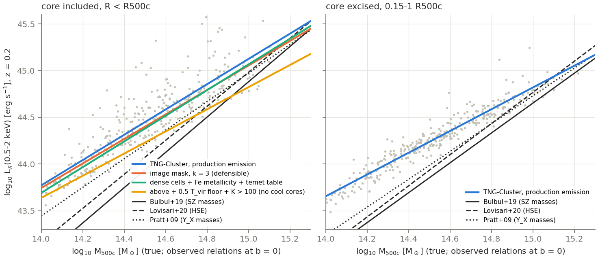

The soft-band luminosity excess: alternatives to the emission model (2026-10-27)¶
An exploration on the branch lx-gas-explore of what, physically and defensibly, could bring the mock L_X-M
relation of TNG-Cluster onto the observed one. Nothing here changes production. The starting point is in
DECISIONS, “The soft-band luminosity excess of TNG-Cluster” and “Forecast of the L_X(1 Mpc)-M_fit comparison”. At
M500c = 5e14 Msun and z = 0.2, TNG-Cluster is +0.28 dex brighter in 0.5-2 keV than the observed relations at b = 0,
and the like-for-like forecast at fixed fit mass is +0.29 +- 0.08 dex.
No departure from the emission model that can be defended physically removes more than about 0.06 dex. The defensible changes to the comparison together remove about 0.13 dex. Removing the full excess means deleting the gas of the cool cores, which an X-ray telescope records. The excess is in the emission measure of gas that X-rays see, whichever cells are allowed to emit.
Since 2026-10-30 (STATUS, “Closed at the integration”): the recommendation of section 6 to add the core-excised relation and a substructure mask, the node job of section 7 and the list of section 8 are closed. The L_X gap test showed the excess to be a property of the TNG-Cluster gas, and none of them was carried out.
Products. Scripts and products are in tngxmm_dev/LXEXPLORE/:
scripts:
extract_cells.py,alt_lx.py,combo.py,summarise.py,fig_lx_m.py;tables:
out/alt_lx.csv,out/combo.csv,out/effects.csv;figure:
out/lx_m_alternatives.png;cutouts:
cutouts/, with itsREADME.mdandmanifest.json.
The ledger entries are section C of docs/assumptions/assumptions.yml (lxalt.*). The switch
sim.gas_clump_fcut was the one alternative implemented in the package, off in every preset. It was removed at
the integration of 2026-10-30 (INTEGRATION_REPORT.md); the numbers below come from the scripts, which do not
use it.
1. The emission chain: physics and choices¶
Physics (not open). The gas emits as a collisionally ionised, optically thin plasma (APEC): L = n_e n_H V Lambda(T, Z). Each cell’s density, internal energy, electron abundance and metal mass fraction are taken as TNG evolves them.
Choices. Each choice is varied below. The production value comes first, temet’s follows in brackets where it differs.
Which cells emit: T > 3e5 K, SFR = 0 and GFM_CoolingRate < 0. (temet: every cell, with star-forming cells at 1000 K.)
Star-forming cells are excluded. (temet: set to 1000 K, so they do not emit.) Nothing represents the hot phase of the two-phase model.
Net-heating cells are excluded. (temet: kept.)
There is no upper temperature cut and no cut on AGN-heated gas. TNG stores no heating time.
Gas bound to satellites, and dense clumps, are kept. (Pop+22 and the cosmo-OWLS/BAHAMAS mocks remove subhalo-bound gas.)
The temperature comes from u with the cell’s own X_H and x_e. (temet: X_H = 0.76 in n_H and mu.)
Emission table: the complete APEC 3.1.3 table, with every line in its bin. (temet: AtomDB 3.0.9 with one line per element and energy bin. That table misses line emission below 2 keV: at Z = 0.3 it gives 0.36-0.49 of the complete table at kT = 0.7-1 keV and 0.82 at 1.5 keV; see
sim/build_apec_table.py.) This departure from temet is already in production. It is documented in the code but has no DECISIONS section of its own.Metallicity: the total GFM_Metallicity over 0.019366, the AG89 metal mass fraction, on the AG89 pattern of the table. (temet: 0.023.) The cell’s own element ratios enter only the photon energies.
Geometry: the gas of the stored sphere or cube about GroupPos, projected through the cube. The luminosity is taken in a cylinder of the TRUE R500c. (temet and Nelson+24: a 3-D sphere of R500c.)
Comparison: the true M500c against references at b = 0, core included, at z = 0.2, against three references.
2. Method¶
Sample. 60 halo-snapshots were read from the stored truth spheres of campaign_v1_full: every cell within
3 R500c, with every field the cuts need (cutouts/README.md).
48 TNG-Cluster halos at z = 0, 0.2, 0.5 and 1.0: 12 per snapshot, evenly spaced in mass rank, from 1.0e14 to 1.9e15 Msun.
12 TNG300 halos at z = 0 and 0.2.
Luminosity per halo. For each halo:
the production luminosity is recomputed cell by cell, with the loader’s formulas and table;
every alternative is applied to the same cells;
L is summed in a cylinder of radius R500c and depth +-3 R500c, averaged over the three axis projections.
Effect of an alternative. The effect is the intercept at 5e14 Msun of an OLS fit of log10(L_alt / L_prod) against log10 M500c, over the 36 TNG-Cluster halos at z <= 0.5. The error is a bootstrap over halos. Only the ratio is carried over to the population relation, not the absolute luminosity.
Checks of the recomputation.
The projected maps sum to the cell sum to within 1e-4.
temet’s own luminosity of the same cells, called through
sim/temet_xray.py, is -0.014 dex from the production value at 5e14 Msun. The difference is the emission table (item 7).My X-ray-like hydrostatic mass (the estimator X_Tsl_nemed of
compute_hse_mass.py: n_e shell median, T_sl, mu = 0.59, 48 log shells) reproduces the stored pipeline values with a median ratio of 0.991 (16-84 per cent: 0.984-0.995).
Representativeness. Twelve halos per snapshot is a small sample. The subset is flat in mass rank, so 1-3e14 Msun halos dominate it, and the intercept at 5e14 Msun partly extrapolates along the fitted slope. The quoted errors are statistical over the subset only. Where the 339-halo population of z = 0.2 already gives a number (the core-excised luminosity), that number is used instead.
Hydrostatic axis.
The headline 3-D hydrostatic mass (barnes21_nosf_fit_mu: all non-star-forming gas, mass-weighted) does not use the emission selection. Every alternative therefore moves L at fixed 3-D hydrostatic mass by the same amount as at fixed true mass.
The fit mass of a mock does see the emission. Its proxy here is the X-ray-like mass of the cells each alternative keeps. The shift at fixed X-ray-like mass is Delta L - 1.39 Delta log M_X, where 1.39 is the TNG L-M slope at z = 0.2.
3. Results¶
The table gives the shift of log10 L_X(0.5-2 keV, cylinder R500c) at M500c = 5e14 Msun, over 36 TNG-Cluster halos at z <= 0.5. Negative values are fainter.
“fixed M_X”: the shift at fixed X-ray-like hydrostatic mass, where computed.
“support”: a page-located ledger proof that the literature uses the choice for an X-ray luminosity; “no” means unsupported.
alternative |
shift (dex) |
fixed M_X |
support (ledger) |
|---|---|---|---|
T > 1e5 K (instead of 3e5 K) |
0.000 |
yes, |
|
T > 1e6 K |
-0.000 |
precedent only for cool-core criteria (barnes2018 p3) |
|
kT > 0.1 / 0.2 / 0.3 keV |
-0.000 / -0.000 / -0.002 |
no |
|
kT > 0.5 keV |
-0.007 +- 0.002 |
-0.007 |
no |
kT > 1 keV |
-0.017 +- 0.004 |
-0.016 |
no |
T > max(0.3 T_vir, 3e5 K) |
-0.029 +- 0.005 |
no |
|
T > max(0.5 T_vir, 5.5 MK), the V2 floor |
-0.095 +- 0.009 |
-0.126 |
no (and |
star-forming cells at their effective temperature |
0.000 |
exclusion supported: |
|
net-heating cells kept |
0.000 |
0.000 |
both choices have precedent: |
AGN bubbles removed, T > 4 T200 |
-0.000 |
yes, |
|
subhalo-bound gas removed (18 halos, earlier test) |
-0.001 (mean; median -0.0001) |
yes, |
|
3-D tail above median + 3.5 sigma per shell ( |
-0.016 +- 0.003 |
-0.020 |
method yes, for profiles only: |
3-D cells above 10x the shell median |
-0.048 +- 0.008 |
-0.053 |
no |
3-D cells above 3x the shell median |
-0.104 +- 0.013 |
no |
|
2-D mask, pixels above 3x the annulus median |
-0.057 +- 0.009 |
observers mask substructure; the threshold is ours |
|
2-D mask, pixels above 2x the annulus median |
-0.082 +- 0.011 |
as above |
|
2-D azimuthal-median map |
-0.082 +- 0.009 |
median profiles yes (eckert2015clump p2); as a luminosity, no |
|
3-D shell-median density (no clumping, sphere) |
-0.021 +- 0.005 |
no |
|
entropy K > 10 / 30 / 100 keV cm^2 |
-0.023 / -0.056 / -0.169 |
-0.057 (K > 30) |
no ( |
temet metal unit 0.023 |
-0.008 +- 0.001 |
temet’s convention ( |
|
metallicity from Fe alone |
-0.016 +- 0.002 |
no |
|
uniform 0.3 Z_AG89 |
+0.004 +- 0.005 |
no |
|
X_H = 0.76 in n_H |
+0.012 +- 0.001 |
temet’s convention |
|
temet’s emission table (3.0.9, one line per element and bin) |
-0.021 +- 0.004 |
temet’s convention; physically incomplete |
|
temet’s own luminosity of every cell |
-0.014 +- 0.004 |
the TNG official convention |
|
3-D sphere instead of the cylinder |
-0.026 +- 0.008 |
Nelson+24’s convention |
|
cylinder depth +-1 / +-2 R500c (instead of +-3) |
-0.015 / -0.009 |
|
|
aperture = X-ray-like R500 (instead of the true R500c) |
-0.012 +- 0.003 |
observers’ convention for hydrostatic masses |
|
core excision 0.15-1 R500c (TNG side only) |
-0.248 (339 halos) |
yes, |
TNG300 (12 halos, z <= 0.2; medians over halos): kT > 0.5 keV -0.003, the V2 floor -0.021, the 3-D tail -0.006, the 2-D mask k = 3 -0.007, the azimuthal-median map -0.032, K > 30 -0.004, temet’s table -0.025, core excision -0.135. At the coarser resolution of TNG300 the gas-phase alternatives matter even less.
Where the luminosity comes from. Median shares of the 0.5-2 keV luminosity inside R500c, by cell temperature:
kT range |
share |
|---|---|
below 0.3 keV |
0.35 per cent |
0.3-0.5 keV |
0.8 per cent |
0.5-1 keV |
1.0 per cent |
1-2 keV |
6.9 per cent |
above 2 keV |
88.7 per cent |
Gas below 0.5 keV carries about 1 per cent, so no floor below 0.5 keV can matter. A floor that does matter has to cut into the 1-3 keV gas of the cool cores. The star-forming cells have effective temperatures below about 1.2e5 K, and every net-heating cell of the inspected halo is colder than 3e5 K. Both cuts are therefore empty in the band, whichever way they are set.
4. Observational side¶
Mass definition.
Lovisari+20 uses hydrostatic masses. Pratt+09 takes its masses from the Y_X relation, which is calibrated on hydrostatic masses.
Comparing them at b = 0 is the most lenient reading, and each 0.1 of bias adds about 0.09 dex.
The relation on SZ masses calibrated on weak lensing (Bulbul+19) gives +0.41 dex at z = 0.2.
The mass definition makes the excess larger, not smaller.
Redshift. Bulbul+19 is pivoted at z = 0.45. TNG-Cluster against it gives +0.40 dex at z = 0.40 and at z = 0.50 (+0.39 at z = 0.2), so the evolution term is not the cause.
Core excision.
TNG’s core-excised luminosity is 0.248 dex below its total at 5e14 Msun (339 halos, z = 0.2).
The core-excised references are lower too. The mean offset over the three references falls from 0.30 to 0.23 dex: Bulbul from 0.41 to 0.30, Lovisari from 0.28 to 0.20, Pratt from 0.20 to 0.19.
Core excision removes about a quarter of the offset: the part that sits inside 0.15 R500c.
Selection.
Pratt+09’s Malmquist-corrected relation is lower and raises the offset from 0.18 to 0.25 dex.
Lovisari+20 is corrected for the Eddington bias and needs no Malmquist correction, being an SZ sample.
The Bulbul+19 masses include the selection corrections.
No missing selection correction lowers the offset.
Band and cosmology. The conversion factor from 0.1-2.4 to 0.5-2 keV (1.62 against 1.66) moves the offset by 0.01 dex. h = 0.70 against 0.6774 moves it by 0.003 dex at fixed mass.
Aperture. Observers integrate inside their own R500, which for hydrostatic masses is smaller than the true R500c. Inside the X-ray-like R500 the mock luminosity is 0.012 dex lower. This is a small part of the offset.
Projection. The 3-D sphere, TNG-Cluster’s own convention, is 0.026 dex below the projected cylinder.
Slope. The excess depends on mass.
Against Bulbul+19 / Lovisari+20 / Pratt+09 it is +0.78 / +0.61 / +0.33 dex at 1e14 Msun, +0.41 / +0.28 / +0.20 at 5e14 and +0.24 / +0.14 / +0.15 at 1e15 (z = 0.2, b = 0, 339-halo fit).
The reason is that the TNG slope (1.39) is flatter than the observed slopes (1.5-1.9).
A change of normalisation at 5e14 Msun does not describe the excess fully.
5. Combinations and their cost¶


L_X(0.5-2 keV)-M500c of TNG-Cluster at z = 0.2 (339 halos, grey; blue line the production fit), the production fit
shifted by three alternatives (intercept and slope from the subset), and the observed relations at b = 0. Right:
core-excised luminosities against the core-excised relations. Script internal/ledger_tests/lx_gas_explore/fig_lx_m.py.
The luminosities are intrinsic, so the image estimator does not enter the figure. It does enter the +0.29 dex
forecast, which compares L_X(1 Mpc) measured on mock and real images: the estimator reads the forecast’s mock pool
0.066 dex low (median over its 8,980 TNG-Cluster and TNG300 views of the v1.0.1 trees, an earlier configuration;
internal/ledger_tests/lx_truth_ratio.py); whether that cancels between the two sides is not measured
(Science definitions, L_X).
Joint effects. The combinations were applied jointly to the same cells (combo.py, 36 halos):
combination |
cylinder R500c |
cylinder 1 Mpc |
|---|---|---|
3-D tail (f_cut = 3.5) + Fe-based metallicity |
-0.028 +- 0.004 |
-0.025 |
3-D cells above 10x the shell median + Fe-based metallicity + temet’s table |
-0.065 +- 0.009 |
-0.060 |
the line above + floor max(0.5 T_vir, 5.5 MK) + K > 100 keV cm^2 |
-0.252 +- 0.044 |
-0.246 |
The last line alone reaches agreement within the errors: it leaves +0.05 dex of the mean b = 0 offset (0.30) and, in the 1 Mpc aperture of the forecast, +0.04 of the +0.29 dex. It acts in the cores: its median over halos is -0.16 dex, and in the halos with low-entropy cores it deletes up to 0.9 dex of the luminosity (10th percentile -0.38 dex). Its effect on a core-excised luminosity was not computed and would be much smaller.
Changes to the comparison. Two changes act on the comparison rather than on the gas and add to the effects above: the core-excised comparison (-0.07 dex on the offset) and the 2-D substructure mask (-0.06 dex). They overlap little: 99 per cent (median) of the luminosity the mask removes lies outside 0.15 R500c, and on the core-excised luminosity the mask gives -0.08 dex.
Cost. No defensible combination reaches the +0.28 dex of the b = 0 comparison or the +0.29 dex of the forecast. The best is about -0.13 dex: the core-excised comparison with an image-level mask. The combinations that come close delete gas observers detect: the cool-core gas below 0.5 T_vir or below K = 100 keV cm^2. That is the gas that makes TNG-Cluster’s cool cores, and a real X-ray observation of those clusters would record it.
6. Recommendation¶
Defensible enough to propose to the author, as sensitivity tests and not as production changes:
The core-excised comparison. It acts on the observable side and leaves the gas unchanged. It removes the part of the offset from the cool-core mix and the core profile, and core-excised relations are what the references publish. The offset falls from 0.30 to 0.23 dex.
An observer-like substructure mask on the mock images (2-D, pixels above k = 3 times the azimuthal median). An X-ray analysis does this with detected extended substructure; the effect is -0.057 dex.
It is a photometry choice. It must be applied identically to the real images, not as a change of the gas.
The threshold is ours; no paper gives one for a luminosity.
The 3-D high-density tail (f_cut = 3.5; the switch
sim.gas_clump_fcuthas been removed): -0.016 dex. It is supported as a method for profiles (Zhuravleva+13), not for a luminosity.
Not defensible:
T_vir-scaled floors, floors above 1 keV and entropy cuts. They delete cool-core gas that emits in the band and is observed, and no paper supports them for a luminosity.
Returning to temet’s emission table. It misses line emission, so it is physically wrong, although it is the table behind the TNG official products.
The 3-D shell-median luminosity and the azimuthal-median map. They remove all clumping, including the part that observed clusters have (sqrt(C) = 1.07 at R500, Eckert+15).
Uniform metallicity and X_H = 0.76. Each is within +-0.02 dex and neither is a physical improvement.
Recommendation of 2026-10-27 (the third item was not taken up, see the note at the top):
Keep the emission model.
Report the excess as a property of TNG-Cluster; the author’s decision of 2026-10-26 stands.
Add two items to the comparison: the core-excised relation, and an image-level substructure mask applied identically to the real and mock images.
7. Node job (not run)¶
Purpose. Turn the subset numbers into population numbers.
Job. Run alt_lx.py (without writing cutouts) over every TNG-Cluster halo at snapshots 72, 78, 84, 91 and 99:
about 1650 halo-snapshots, read from the truth spheres, with one CSV row per halo.
Cost. On the login node a halo took 0.5-4 min on one core. On one node (72 cores, 4-12 GB per worker) that is about 1-2 h of wall time, in one sbatch.
Not proposed. A full-population set of cutouts would be about 3 TB.
8. Not verified¶
The threshold k that matches what observers actually mask.
Roncarelli+13’s own clump definition. It is quoted second-hand, through Eckert+15.
The journal version of Pop+22 (only the arXiv version was found).
Whether the mock fit masses follow the shifts of the X-ray-like mass used in the “fixed M_X” column.
The effects at z = 1. They are computed (the “TNG-Cluster all z” rows of
out/effects.csv) but not discussed.The literature scan (section 9) did not read Rasia+14, Planelles+17, Battaglia+15, Vazza+13, Khedekar+13, or the Three Hundred and Magneticum X-ray papers.
9. Literature scan¶
Ranked by use for justifying a gas cut or emission choice in TNG mocks. Pages are pages of the arXiv PDF. Entries not named in the last paragraph come from the scan and were not checked against the page here.
Remove subhalo-bound gas.
Pop+22 (2205.11528), p. 3, Sect. 2; Le Brun+14 (1312.5462), p. 5; McCarthy+17 (1603.02702), p. 18. The reason given: observers excise substructures.
The Pop+22 method is TNG-specific.
Measured here: 0.001 dex. It does not explain the excess.
A 1e5 K floor; exclusion of star-forming and positive-cooling-rate gas.
Pop+22 p. 3; Le Brun+14 p. 5; C-EAGLE and MACSIS (1703.10907 p. 5, 1607.04569 p. 5); FLAMINGO (2312.08277 p. 5, which states the effect is negligible); FABLE (1905.00013 p. 4: 3e4 K plus a 4 T200 cap on AGN bubbles).
TNG cool-core studies use 1e6 K and net cooling: Barnes+18 (1710.08420) p. 3; Lehle+24 (2311.06333) p. 3.
For the luminosity the production floor (3e5 K) is stricter than these mocks (3e4-1e5 K); the 1e6 K floor is for cool-core criteria only. Measured here: 0.000.
Star-forming gas in the effective EOS.
Nelson+24 (2311.06338), p. 7, Sect. 2.4: such gas is set to 1000 K.
Truong+20 (1911.11165), p. 22, App. C: within TNG the X-ray emission of the unresolved phases cannot be estimated.
Springel & Hernquist 03 (astro-ph/0206393), p. 4: cold clouds at 1000 K in a hot ambient phase.
Applies directly to TNG. Measured here: 0.000.
Clump removal.
Zhuravleva+13 (1210.6706), p. 7, Sect. 4: the tail above the median plus f_cut sigma, f_cut = 3.5, “rather arbitrary”, applied to profiles. P. 4: mean profiles depend on the clump-removal procedure.
Eckert+15 (1310.8389), p. 2: the densest 1 per cent of a shell’s volume masked, in simulations. P. 6: observed sqrt(C) = 1.07 +- 0.05 at R500.
No paper removes clumps from a mock luminosity. Measured here: -0.016 to -0.10 dex.
Core excision and the observational conventions.
Bulbul+19 (1807.02556), p. 5; Lovisari+20 (2002.11740), pp. 3 and 5; Pratt+09 (0809.3784), p. 2.
TNG luminosities high at fixed mass.
Pop+22, p. 11: TNG luminosities are high even where the gas fractions agree; clumps, the profile shape and the temperature profile are named as possible causes, without a measurement.
Popesso+24 (2411.16555), p. 9: EAGLE and TNG gas-density normalisations exceed the observed ones.
Aljamal+25 (2507.05176), p. 11: attributes bright TNG-Cluster halos to their cool cores. This is second-hand; the statement could not be found in Nelson+24, which calls the relation “broadly consistent” (p. 14).
Of this list, the ledger relies on Pop+22, Le Brun+14, Braspenning+24, Henden+19, Barnes+18, Nelson+24, Truong+20, Springel & Hernquist 03, Zhuravleva+13, Eckert+15, Bulbul+19, Lovisari+20 and Pratt+09. Each of these is boxed on its cited page.